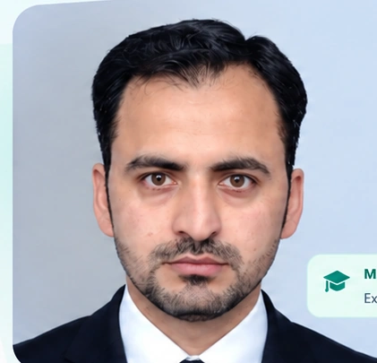

ABOUT
Hello, I’m
Mehboob Alam.
I am an applied mathematician with a strong interest in machine learning, optimization, and computational modeling. I enjoy developing mathematical and data-driven methods to solve real-world problems.

M.S. CandidateExpected May 2027
New Mexico State University Publications18Journal Articles Projects8+ML, Optimization, Computing Experience3+ YearsTeaching & Research
Research Interests
Machine LearningOptimizationScientific ComputingFractional Differential EquationsComputational Modeling
Tools & Technologies
PythonMATLABMathematicaLaTeXMachine LearningNumerical MethodsData Analysis
Location
Las Cruces, New Mexico, USA 🇺🇸
Open to research and career opportunities.